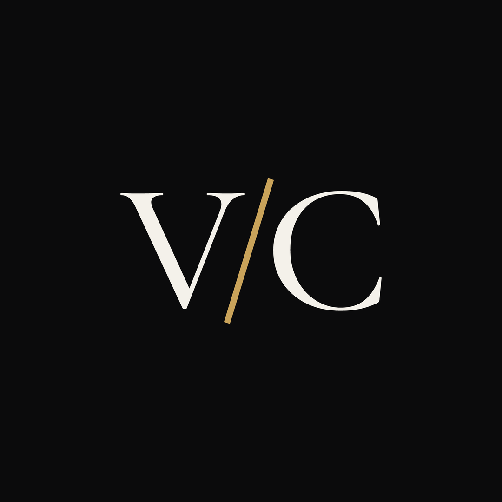

VentureClap
Serif V/C monogram. Ink black, ivory and brass.
Primary logo, stacked
logo-stacked.svg and logo-stacked-light.svg: for cards, decks, video end frames and merch.
Horizontal logo
logo.svg and logo-light.svg: for the website header, email signatures and anywhere wide.
Monogram
Small sizes

favicon.svg uses a bolder cut of the monogram so it stays readable in a browser tab.
Social avatar

avatar-1080.png is 1080×1080 and safe for circular crops on Instagram and LinkedIn.
Palette
Ink#0B0B0C
Ivory#F4F1EA
Brass#C9A35A
Brass (on ivory)#A8823A
Panel#151515
Type
Cormorant Garamond
Monogram and headings (Medium 500)
INTER
Wordmark, body and labels (Regular 400)